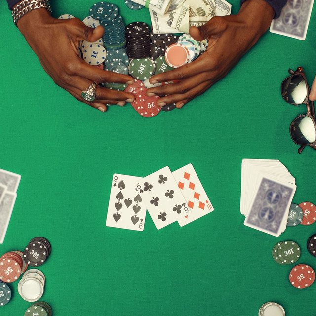

The Eclectic Polymath Podcast · Archive
#144 The 2011 NBA Lockout: How Money Remade Player Power

About this episode
The modern NBA isn’t just a basketball league. It’s an ongoing negotiation over who controls an increasingly valuable economic machine.
This episode looks at how the 2011 lockout reshaped the relationship between players and owners. Owners successfully reduced the players’ share of basketball-related income, but shorter contracts and a changing salary structure helped create something they didn’t fully anticipate: an era of superstar mobility, trade demands, free agency, and player-built superteams.
We get into franchise valuations, max contracts, independent athlete wealth, the rise of player empowerment, and the 2023 Collective Bargaining Agreement’s attempt to give teams more control through restrictive salary-cap “aprons.” This is a story about labor and capital—and how every attempt to shift power in professional sports creates a new strategy for getting it back.
Key points
- The modern NBA isn’t just a basketball league.
- This episode looks at how the 2011 lockout reshaped the relationship between players and owners.
- We get into franchise valuations, max contracts, independent athlete wealth, the rise of player empowerment, and the 2023 Collective Bargaining Agreement’s attempt to give teams more control through restrictive salary-cap “aprons.” This is a story about labor and capital
More like this
 #097 Post-World Cup Fever: Clubs, Nations, and the Global Architecture of the GameJuly 16, 202659:02
#097 Post-World Cup Fever: Clubs, Nations, and the Global Architecture of the GameJuly 16, 202659:02 #072 Demis Hassabis: Chess, DeepMind and the Dream of Benevolent AIJune 29, 202639:39
#072 Demis Hassabis: Chess, DeepMind and the Dream of Benevolent AIJune 29, 202639:39 #061 FIFA: Power, Corruption, and the Politics of Global FootballJune 25, 20261:00:55
#061 FIFA: Power, Corruption, and the Politics of Global FootballJune 25, 20261:00:55
#057 Poker Face: Risk, Discipline, and the Psychology of Decision StrategyJune 24, 202652:12